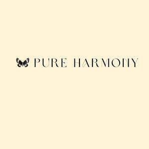

Trade Mark Journal No.2025/010 7 March 2025
UK00004159237 12 February 2025 (24,25)

- Class 24
- Bedroom textile fabrics; Household textile goods; Textile fabrics for making up into household textile articles; Furniture coverings of textile; Coverings (Furniture -) of textile; Textile fabric; Textile fabrics; Quilts of textile; Textiles for furnishings; Household textiles; Textile fabrics for use in the manufacture of furniture; Furnishing fabrics being textile piece goods; Textiles; Household textile piece goods; Curtains of textile; Textile goods for use as bedding; Textile fabrics for making into clothing; Fabrics being textile piece goods for use in embroidery; Tapestries of textile; Textile goods, and substitutes for textile goods; Textile used as lining for clothing; Textile fabrics for making into linens; Textiles for interior decorating; Doilies of textile; Textile fabrics for use in the manufacture of sportswear; Waterproof textile fabrics; Textile fabrics for lingerie; Textile fabrics for the manufacture of clothing; Fabrics being textile piece goods; Textile fabrics for use in the manufacture of wall coverings; Non-woven textile fabrics; Textile tablecloths; Tablecloths of textile; Tablemats of textile; Wall decorations of textile; Household textile articles; Fabrics for manufacturing garden furniture; Rubberized textile fabrics; Textile fabrics for use in manufacture; Kitchen towels [textile]; Kitchen towels of textile; Hand-towels made of textile fabrics; Textile fabrics in the piece; Household textile articles made from non-woven materials; Curtains made of textile fabrics; Textile piece goods made of cotton; Pennants of textile; Place mats of textile; Textile place mats; Textile fabric piece goods for the manufacture of upholstered furniture; Textile piece goods for clothing; Fabrics being textile piece goods for use in tapestry; Textile fabrics for use in the manufacture of curtains; Textile fabrics for use in the manufacture of bedding; Textile piece goods for making curtains; Textiles for upholstery; Non-woven textile piece goods; Suiting materials [textile]; Textile fabrics for making into blankets; Piece goods (Textile -); Textile piece goods; Disposable bedding of textile; Handkerchiefs of textile; Textile handkerchiefs; Textile fabric piece goods for use in the manufacture of clothing; Curtains made from textile materials; Curtains made of textile materials; Textile fabrics for use in the manufacture of beds; Handcrafted textile wall hangings; Textile coasters; Coasters of textile; Reinforced fabrics [textile]; Covered rubber yarn fabrics [for textile use]; Textiles and substitutes for textiles; Fabrics being textile piece goods for use in manufacture; Fabrics for textile use; Linings [textile]; Textiles made of cotton; Textile piece goods for making into clothing; Fabrics being textile piece goods for use in patchwork; Towels of textile; Towels [textile]; Towels [of textile]; Textiles in the form of window furnishings; Small curtains made of textile materials; Non-woven textiles; Plastic woven textile materials for use in agriculture; Towelling [textile]; Textile piece goods for use in the manufacture of industrial filters; Textile fabrics for use in the manufacture of towels.
- Class 25
- Clothing; Knitwear [clothing]; Jackets [clothing]; Ready-to-wear clothing; Woolen clothing; Garments for protecting clothing; Layettes [clothing]; Clothing layettes; Linen clothing; Headbands [clothing]; Headbands for clothing; Gloves [clothing]; Gloves as clothing; Clothes; Aprons [clothing]; Kerchiefs [clothing]; Jerseys [clothing]; Denims [clothing]; Shorts [clothing]; Cashmere clothing; Capes (clothing); Oilskins [clothing]; Gabardines [clothing]; Silk clothing; Leather (Clothing of -); Leather clothing; Clothing of leather; Collars [clothing]; Parts of clothing, footwear and headgear; Knitted clothing; Veils [clothing]; Hoods [clothing]; Windproof clothing; Corsets [clothing, foundation garments]; Embroidered clothing; Wristbands [clothing]; Belts [clothing]; Belts for clothing; Bandeaux [clothing]; Rainproof clothing; Waterproof clothing; Casual clothing; Visors [clothing]; Jackets being sports clothing; Jackets (Stuff -) [clothing]; Stuff jackets [clothing]; Bottoms [clothing]; Playsuits [clothing]; Clothing for leisure wear; Ready-made clothing; Latex clothing; Trunks being clothing; Woven clothing; Infant clothing; Drawers [clothing]; Drawers as clothing; Leisure clothing; Ties [clothing]; Clothing for children; Clothing for sports; Sports clothing; Athletic clothing; Muffs [clothing]; Bodies [clothing]; Clothing for babies; Tops [clothing]; Clothing for infants; Clothing for cycling; Weatherproof clothing; Pockets for clothing; Fabric belts [clothing]; Water-resistant clothing; Triathlon clothing; Handwarmers [clothing]; Clothing for skiing; Beach clothing; Thermal clothing; Chaps (clothing); Cowls [clothing]; Men's clothing; Mitts [clothing]; Braces for clothing; Dance clothing; Furs [clothing]; Maternity clothing; Fishing clothing.
Ayse Binici